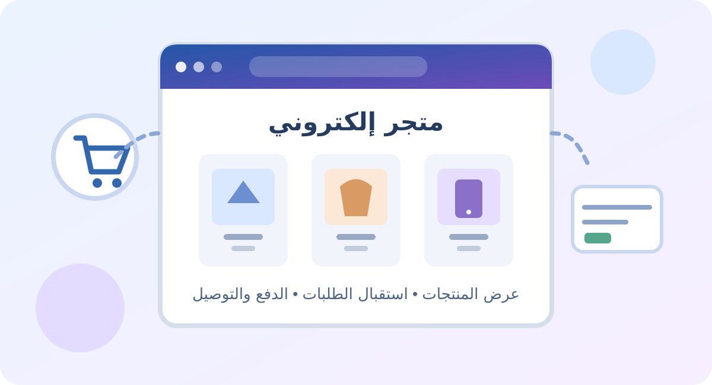

صورة توضيحية للتجارة الإلكترونية

1- المقدمة
التجارة الإلكترونية هي عملية بيع وشراء المنتجات والخدمات عبر الإنترنت باستخدام المواقع والتطبيقات. تطورت بشكل كبير بعد انتشار الهواتف الذكية ووسائل الدفع الإلكتروني، وأصبحت بديلاً قوياً للمحلات التقليدية. في هذا التقرير سنشرح كيف تعمل المتاجر الإلكترونية وكيف تعرض منتجاتها وتستقبل الطلبات من العملاء.
2- شرح الموضوع
أولاً: ما هي مكونات المتجر الإلكتروني؟
يتكون أي متجر إلكتروني من ثلاثة أجزاء أساسية:
- الواجهة الأمامية (Front-End): وهي الجزء الذي يراه العميل، وتحتوي على صور المنتجات والأسعار وسلة المشتريات، وتصمم بلغات HTML وCSS وJavaScript.
- الخلفية (Back-End): وهي الجزء المسؤول عن إدارة الطلبات وتتبع المخزون وحفظ بيانات العملاء، وتبرمج بلغات مثل PHP أو Python.
- قاعدة البيانات (Database): وهي التي تخزن كل معلومات المنتجات والعملاء والطلبات.
ثانياً: كيف يتم عرض المنتجات بشكل احترافي؟
لجذب العميل يجب عرض المنتج بطريقة مقنعة، وذلك من خلال:
- صورة عالية الجودة من عدة زوايا مع إمكانية التكبير.
- وصف تفصيلي للمنتج (المقاس، الخامة، المميزات، طريقة الاستخدام).
- السعر قبل وبعد الخصم.
- تقييمات وآراء العملاء الذين اشتروا المنتج من قبل.
مثال: موقع أمازون يعرض كل منتج مع فيديو وجدول مقارنة وتقييم بالنجوم.
ثالثاً: كيف يتم استقبال الطلبات والدفع والتوصيل؟
تمر عملية الشراء بعدة خطوات منظمة:
- العميل يتصفح المنتجات ويضيف ما يريده إلى سلة التسوق (Cart).
- ينتقل إلى صفحة الدفع (Checkout) ويسجل عنوانه ورقم هاتفه.
- يختار طريقة الدفع: الدفع عند الاستلام، بطاقة بنكية، محفظة إلكترونية مثل فودافون كاش، أو بوابات دفع مثل PayPal وFawry وPaymob.
- يصل للعميل إشعار تأكيد الطلب عبر الإيميل أو الواتساب.
- يتم إرسال الطلب لشركة الشحن لتوصيله للعميل.
الأمان: لضمان الأمان يتم تشفير بيانات الدفع باستخدام شهادة SSL.
ملخص مكونات المتجر الإلكتروني
| المكوّن | وظيفته | أمثلة أو تفاصيل |
|---|---|---|
| الواجهة الأمامية (Front-End) | عرض المتجر للعميل والتفاعل معه | صور المنتجات، الأسعار، سلة المشتريات |
| الخلفية (Back-End) | إدارة العمليات والطلبات والمخزون | PHP أو Python |
| قاعدة البيانات (Database) | حفظ وتنظيم المعلومات | بيانات المنتجات والعملاء والطلبات |
رابعاً: ما هي أشهر منصات إنشاء المتاجر؟
| المنصة | وصفها |
|---|---|
| Shopify | منصة سهلة للمبتدئين ولا تتطلب برمجة. |
| WooCommerce | إضافة مجانية لمواقع ووردبريس، منتشرة جداً في مصر. |
| متجري وزد وسلة | منصات عربية لإنشاء المتاجر الإلكترونية. |
3- الخاتمة
في النهاية، التجارة الإلكترونية لم تعد مجرد وسيلة للبيع، بل أصبحت نظاماً اقتصادياً متكاملاً ساعد الشباب وأصحاب المشاريع الصغيرة على بدء أعمالهم بتكلفة قليلة والوصول لعملاء في جميع المحافظات والعالم. ومع انتشار الإنترنت في مصر، من المتوقع أن تستمر في النمو بشكل كبير.